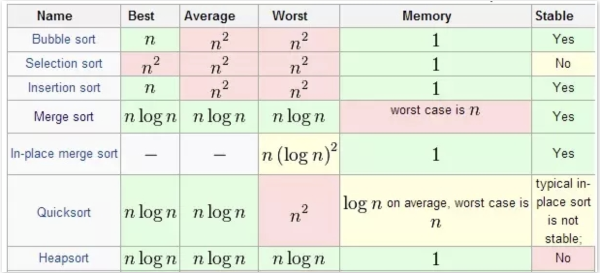
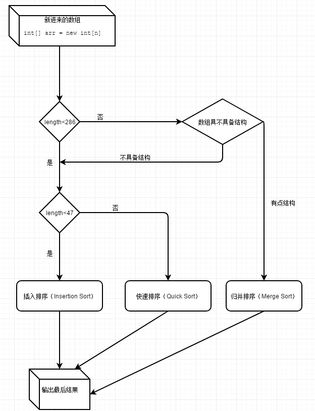

<!DOCTYPE html>


<html lang="zh-CN" >


<head>
  <meta charset="utf-8" />
    
  <meta name="description" content="代码生活的记录" />
  
  <meta name="viewport" content="width=device-width, initial-scale=1, maximum-scale=1" />
  <title>
    nlogn排序算法总结--快排、堆排、归并 |  Shengwei&#39;s Blog
  </title>
  <meta name="generator" content="hexo-theme-yilia-plus">
  
  <link rel="shortcut icon" href="/favicon.ico" />
  
  
<link rel="stylesheet" href="/dist/main.css">

  
<link rel="stylesheet" href="/css/custom.css">

  
  <script src="https://cdn.jsdelivr.net/npm/pace-js@1.0.2/pace.min.js"></script>
  
  

  

<link rel="alternate" href="/atom.xml" title="Shengwei's Blog" type="application/atom+xml">
</head>

</html>

<body>
  <div id="app">
    <main class="content on">
      <section class="outer">
  <article id="post-nlogn排序算法总结-快排、堆排、归并" class="article article-type-post" itemscope
  itemprop="blogPost" data-scroll-reveal>

  <div class="article-inner">
    
    <header class="article-header">
       
<h1 class="article-title sea-center" style="border-left:0" itemprop="name">
  nlogn排序算法总结--快排、堆排、归并
</h1>
 

    </header>
    

    
    <div class="article-meta">
      <a href="/2020/04/10/nlogn%E6%8E%92%E5%BA%8F%E7%AE%97%E6%B3%95%E6%80%BB%E7%BB%93-%E5%BF%AB%E6%8E%92%E3%80%81%E5%A0%86%E6%8E%92%E3%80%81%E5%BD%92%E5%B9%B6/" class="article-date">
  <time datetime="2020-04-09T16:56:32.000Z" itemprop="datePublished">2020-04-10</time>
</a>
      
  <div class="article-category">
    <a class="article-category-link" href="/categories/%E6%95%B0%E6%8D%AE%E7%BB%93%E6%9E%84%E4%B8%8E%E7%AE%97%E6%B3%95/">数据结构与算法</a>
  </div>

      
      
<div class="word_count">
    <span class="post-time">
        <span class="post-meta-item-icon">
            <i class="ri-quill-pen-line"></i>
            <span class="post-meta-item-text"> 字数统计:</span>
            <span class="post-count">772字</span>
        </span>
    </span>

    <span class="post-time">
        &nbsp; | &nbsp;
        <span class="post-meta-item-icon">
            <i class="ri-book-open-line"></i>
            <span class="post-meta-item-text"> 阅读时长≈</span>
            <span class="post-count">3分钟</span>
        </span>
    </span>
</div>

      
    </div>
    

    
    
    <div class="tocbot"></div>


    

    
    <div class="article-entry" itemprop="articleBody">
      
      

      
      <h2 id="快速排序"><a href="#快速排序" class="headerlink" title="快速排序"></a>快速排序</h2><p>快排思想比较好理解, 每次找到一个元素的最终位置, 并把所有小于这个元素的值放在左边, 所有大于这个元素的值放在右边.</p>
<figure class="highlight java"><table><tr><td class="gutter"><pre><span class="line">1</span><br><span class="line">2</span><br><span class="line">3</span><br><span class="line">4</span><br><span class="line">5</span><br><span class="line">6</span><br><span class="line">7</span><br><span class="line">8</span><br><span class="line">9</span><br><span class="line">10</span><br><span class="line">11</span><br><span class="line">12</span><br><span class="line">13</span><br><span class="line">14</span><br><span class="line">15</span><br><span class="line">16</span><br><span class="line">17</span><br><span class="line">18</span><br><span class="line">19</span><br><span class="line">20</span><br><span class="line">21</span><br><span class="line">22</span><br><span class="line">23</span><br><span class="line">24</span><br><span class="line">25</span><br><span class="line">26</span><br></pre></td><td class="code"><pre><span class="line"><span class="function"><span class="keyword">public</span> <span class="keyword">static</span> <span class="keyword">void</span> <span class="title">quickSort</span><span class="params">(<span class="keyword">int</span>[] nums)</span> </span>&#123;</span><br><span class="line">    <span class="keyword">if</span> (nums == <span class="keyword">null</span> || nums.length &lt; <span class="number">2</span>) &#123;</span><br><span class="line">        <span class="keyword">return</span>;</span><br><span class="line">    &#125;</span><br><span class="line">    quickSortCore(nums, <span class="number">0</span>, nums.length - <span class="number">1</span>);</span><br><span class="line">&#125;</span><br><span class="line"></span><br><span class="line"><span class="function"><span class="keyword">private</span> <span class="keyword">static</span> <span class="keyword">void</span> <span class="title">quickSortCore</span><span class="params">(<span class="keyword">int</span>[] nums, <span class="keyword">int</span> low, <span class="keyword">int</span> high)</span> </span>&#123;</span><br><span class="line">    <span class="keyword">if</span> (low &lt;= high) &#123;</span><br><span class="line">        <span class="keyword">int</span> pivot = nums[low];</span><br><span class="line">        <span class="keyword">int</span> i = low, j = high;</span><br><span class="line">        <span class="keyword">while</span> (i &lt; j) &#123;</span><br><span class="line">            <span class="keyword">while</span> (i &lt; j &amp;&amp; nums[j] &gt;= pivot) &#123;</span><br><span class="line">                --j;</span><br><span class="line">            &#125;</span><br><span class="line">            nums[i] = nums[j];</span><br><span class="line">            <span class="keyword">while</span> (i &lt; j &amp;&amp; nums[i] &lt;= pivot) &#123;</span><br><span class="line">                ++i;</span><br><span class="line">            &#125;</span><br><span class="line">            nums[j] = nums[i];</span><br><span class="line">        &#125;</span><br><span class="line">        nums[i] = pivot;</span><br><span class="line">        quickSortCore(nums, low, i - <span class="number">1</span>);</span><br><span class="line">        quickSortCore(nums, i + <span class="number">1</span>, high);</span><br><span class="line">    &#125;</span><br><span class="line">&#125;</span><br></pre></td></tr></table></figure>

<h2 id="堆排序"><a href="#堆排序" class="headerlink" title="堆排序"></a>堆排序</h2><p>堆排的过程主要分为两步, 第一步初始化堆, 从最后一个非叶子节点开始从后往前做堆化调整, 第二步是将堆头与堆尾元素交换, 从而确定得到一个最大数或者最小数(所确定的数不参与下次迭代), 依次迭代到堆只剩最后一个元素即可.</p>
<figure class="highlight java"><table><tr><td class="gutter"><pre><span class="line">1</span><br><span class="line">2</span><br><span class="line">3</span><br><span class="line">4</span><br><span class="line">5</span><br><span class="line">6</span><br><span class="line">7</span><br><span class="line">8</span><br><span class="line">9</span><br><span class="line">10</span><br><span class="line">11</span><br><span class="line">12</span><br><span class="line">13</span><br><span class="line">14</span><br><span class="line">15</span><br><span class="line">16</span><br><span class="line">17</span><br><span class="line">18</span><br><span class="line">19</span><br><span class="line">20</span><br><span class="line">21</span><br><span class="line">22</span><br><span class="line">23</span><br><span class="line">24</span><br><span class="line">25</span><br><span class="line">26</span><br><span class="line">27</span><br><span class="line">28</span><br><span class="line">29</span><br><span class="line">30</span><br><span class="line">31</span><br><span class="line">32</span><br><span class="line">33</span><br><span class="line">34</span><br></pre></td><td class="code"><pre><span class="line"><span class="function"><span class="keyword">public</span> <span class="keyword">static</span> <span class="keyword">void</span> <span class="title">heapSort</span><span class="params">(<span class="keyword">int</span>[] nums)</span> </span>&#123;</span><br><span class="line">    <span class="keyword">if</span> (nums == <span class="keyword">null</span> || nums.length &lt; <span class="number">2</span>) &#123;</span><br><span class="line">        <span class="keyword">return</span>;</span><br><span class="line">    &#125;</span><br><span class="line">    <span class="keyword">int</span> n = nums.length;</span><br><span class="line">    <span class="keyword">for</span> (<span class="keyword">int</span> i = n / <span class="number">2</span> - <span class="number">1</span>; i &gt;= <span class="number">0</span>; --i) &#123;</span><br><span class="line">        heapify(nums, i, n);</span><br><span class="line">    &#125;</span><br><span class="line">    <span class="keyword">for</span> (<span class="keyword">int</span> i = n - <span class="number">1</span>; i &gt; <span class="number">0</span>; --i) &#123;</span><br><span class="line">        swap(nums, <span class="number">0</span>, i);</span><br><span class="line">        heapify(nums, <span class="number">0</span>, i);</span><br><span class="line">    &#125;</span><br><span class="line">&#125;</span><br><span class="line"></span><br><span class="line"><span class="function"><span class="keyword">private</span> <span class="keyword">static</span> <span class="keyword">void</span> <span class="title">heapify</span><span class="params">(<span class="keyword">int</span>[] nums, <span class="keyword">int</span> parent, <span class="keyword">int</span> len)</span> </span>&#123;</span><br><span class="line">    <span class="keyword">int</span> child = parent * <span class="number">2</span> + <span class="number">1</span>;</span><br><span class="line">    <span class="keyword">while</span> (child &lt; len) &#123;</span><br><span class="line">        <span class="keyword">if</span> (child + <span class="number">1</span> &lt; len &amp;&amp; nums[child] &lt; nums[child + <span class="number">1</span>]) &#123;</span><br><span class="line">            ++child;</span><br><span class="line">        &#125;</span><br><span class="line">        <span class="keyword">if</span> (nums[parent] &gt;= nums[child]) &#123;</span><br><span class="line">            <span class="keyword">break</span>;</span><br><span class="line">        &#125; <span class="keyword">else</span> &#123;</span><br><span class="line">            swap(nums, parent, child);</span><br><span class="line">            parent = child;</span><br><span class="line">        &#125;</span><br><span class="line">    &#125;</span><br><span class="line">&#125;</span><br><span class="line"></span><br><span class="line"><span class="function"><span class="keyword">private</span> <span class="keyword">static</span> <span class="keyword">void</span> <span class="title">swap</span><span class="params">(<span class="keyword">int</span>[] nums, <span class="keyword">int</span> i, <span class="keyword">int</span> j)</span> </span>&#123;</span><br><span class="line">    <span class="keyword">int</span> tmp = nums[i];</span><br><span class="line">    nums[i] = nums[j];</span><br><span class="line">    nums[j] = tmp;</span><br><span class="line">&#125;</span><br></pre></td></tr></table></figure>

<h2 id="归并排序"><a href="#归并排序" class="headerlink" title="归并排序"></a>归并排序</h2><p>归并的思想就是分治, 大问题化为小问题, 大数组化为小数组, 每个子问题都是将数组一分为两个有序数组, 然后再按序合并.<br>下面的代码是逆序对题目的代码, 是基于归并排序的, 代码只多了一个判断.</p>
<figure class="highlight java"><table><tr><td class="gutter"><pre><span class="line">1</span><br><span class="line">2</span><br><span class="line">3</span><br><span class="line">4</span><br><span class="line">5</span><br><span class="line">6</span><br><span class="line">7</span><br><span class="line">8</span><br><span class="line">9</span><br><span class="line">10</span><br><span class="line">11</span><br><span class="line">12</span><br><span class="line">13</span><br><span class="line">14</span><br><span class="line">15</span><br><span class="line">16</span><br><span class="line">17</span><br><span class="line">18</span><br><span class="line">19</span><br><span class="line">20</span><br><span class="line">21</span><br><span class="line">22</span><br><span class="line">23</span><br><span class="line">24</span><br><span class="line">25</span><br><span class="line">26</span><br><span class="line">27</span><br><span class="line">28</span><br><span class="line">29</span><br><span class="line">30</span><br><span class="line">31</span><br><span class="line">32</span><br><span class="line">33</span><br><span class="line">34</span><br><span class="line">35</span><br><span class="line">36</span><br><span class="line">37</span><br><span class="line">38</span><br><span class="line">39</span><br><span class="line">40</span><br></pre></td><td class="code"><pre><span class="line"><span class="comment">// 统计逆序对个数</span></span><br><span class="line"><span class="keyword">private</span> <span class="keyword">static</span> <span class="keyword">int</span> cnt = <span class="number">0</span>;</span><br><span class="line"><span class="function"><span class="keyword">public</span> <span class="keyword">static</span> <span class="keyword">void</span> <span class="title">mergeSort</span><span class="params">(<span class="keyword">int</span>[] nums)</span> </span>&#123;</span><br><span class="line">    <span class="keyword">if</span> (nums == <span class="keyword">null</span> || nums.length &lt; <span class="number">2</span>) &#123;</span><br><span class="line">        <span class="keyword">return</span>;</span><br><span class="line">    &#125;</span><br><span class="line">    mergeSort(nums, <span class="number">0</span>, nums.length - <span class="number">1</span>);</span><br><span class="line">&#125;</span><br><span class="line"></span><br><span class="line"><span class="function"><span class="keyword">private</span> <span class="keyword">static</span> <span class="keyword">void</span> <span class="title">mergeSort</span><span class="params">(<span class="keyword">int</span>[] nums, <span class="keyword">int</span> low, <span class="keyword">int</span> high)</span> </span>&#123;</span><br><span class="line">    <span class="keyword">if</span> (low &lt; high) &#123;</span><br><span class="line">        <span class="keyword">int</span> mid = low + (high - low) / <span class="number">2</span>;</span><br><span class="line">        mergeSort(nums, low, mid);</span><br><span class="line">        mergeSort(nums, mid + <span class="number">1</span>, high);</span><br><span class="line">        merge(nums, low, high);</span><br><span class="line">    &#125;</span><br><span class="line">&#125;</span><br><span class="line"></span><br><span class="line"><span class="function"><span class="keyword">private</span> <span class="keyword">static</span> <span class="keyword">void</span> <span class="title">merge</span><span class="params">(<span class="keyword">int</span>[] nums, <span class="keyword">int</span> low, <span class="keyword">int</span> high)</span> </span>&#123;</span><br><span class="line">    <span class="keyword">int</span>[] help = <span class="keyword">new</span> <span class="keyword">int</span>[high - low + <span class="number">1</span>];</span><br><span class="line">    <span class="keyword">int</span> mid = low + (high - low) / <span class="number">2</span>;</span><br><span class="line">    <span class="keyword">int</span> i = <span class="number">0</span>, left = low, right = mid + <span class="number">1</span>;</span><br><span class="line">    <span class="keyword">while</span> (left &lt;= mid &amp;&amp; right &lt;= high) &#123;</span><br><span class="line">        <span class="keyword">if</span> (nums[right] &lt; nums[left]) &#123;</span><br><span class="line">            <span class="comment">// 这个判断是为了统计逆序对个数，单纯归并排序并不需要</span></span><br><span class="line">            cnt += mid - left + <span class="number">1</span>;</span><br><span class="line">        &#125;</span><br><span class="line">        <span class="comment">// 相等情况取左边是为了方便统计逆序对</span></span><br><span class="line">        help[i++] = nums[left] &lt;= nums[right] ? nums[left++] : nums[right++];</span><br><span class="line">    &#125;</span><br><span class="line">    <span class="keyword">while</span> (left &lt;= mid) &#123;</span><br><span class="line">        help[i++] = nums[left++];</span><br><span class="line">    &#125;</span><br><span class="line">    <span class="keyword">while</span> (right &lt;= high) &#123;</span><br><span class="line">        help[i++] = nums[right++];</span><br><span class="line">    &#125;</span><br><span class="line">    <span class="keyword">for</span> (<span class="keyword">int</span> j = <span class="number">0</span>; j &lt; i; ++j) &#123;</span><br><span class="line">        nums[low + j] = help[j];</span><br><span class="line">    &#125;</span><br><span class="line">&#125;</span><br></pre></td></tr></table></figure>

<h2 id="总结"><a href="#总结" class="headerlink" title="总结"></a>总结</h2><ul>
<li>三个 nlogn 的排序算法需要熟记, 面试经常让手撕代码.</li>
<li>常见排序算法的总结<br></li>
<li>工程中的排序算法结合了多种排序算法的特点, 下图是 Java 中的 sort 函数选择合适排序算法的逻辑.<br></li>
</ul>

      
      <!-- reward -->
      
      <div id="reward-btn">
        打赏
      </div>
      
    </div>
    
    
      <!-- copyright -->
      
        <div class="declare">
          <ul class="post-copyright">
            <li>
              <i class="ri-copyright-line"></i>
              <strong>版权声明： </strong s>
              本博客所有文章除特别声明外，均采用 <a href="https://www.apache.org/licenses/LICENSE-2.0.html" rel="external nofollow"
                target="_blank">Apache License 2.0</a> 许可协议。转载请注明出处！
            </li>
          </ul>
        </div>
        
    <footer class="article-footer">
      
          
<div class="share-btn">
      <span class="share-sns share-outer">
        <i class="ri-share-forward-line"></i>
        分享
      </span>
      <div class="share-wrap">
        <i class="arrow"></i>
        <div class="share-icons">
          
          <a class="weibo share-sns" href="javascript:;" data-type="weibo">
            <i class="ri-weibo-fill"></i>
          </a>
          <a class="weixin share-sns wxFab" href="javascript:;" data-type="weixin">
            <i class="ri-wechat-fill"></i>
          </a>
          <a class="qq share-sns" href="javascript:;" data-type="qq">
            <i class="ri-qq-fill"></i>
          </a>
          <a class="douban share-sns" href="javascript:;" data-type="douban">
            <i class="ri-douban-line"></i>
          </a>
          <!-- <a class="qzone share-sns" href="javascript:;" data-type="qzone">
            <i class="icon icon-qzone"></i>
          </a> -->
          
          <a class="facebook share-sns" href="javascript:;" data-type="facebook">
            <i class="ri-facebook-circle-fill"></i>
          </a>
          <a class="twitter share-sns" href="javascript:;" data-type="twitter">
            <i class="ri-twitter-fill"></i>
          </a>
          <a class="google share-sns" href="javascript:;" data-type="google">
            <i class="ri-google-fill"></i>
          </a>
        </div>
      </div>
</div>

<div class="wx-share-modal">
    <a class="modal-close" href="javascript:;"><i class="ri-close-circle-line"></i></a>
    <p>扫一扫，分享到微信</p>
    <div class="wx-qrcode">
      
    </div>
</div>

<div id="share-mask"></div>
      
      
  <ul class="article-tag-list" itemprop="keywords"><li class="article-tag-list-item"><a class="article-tag-list-link" href="/tags/%E6%8E%92%E5%BA%8F/" rel="tag">排序</a></li></ul>


    </footer>

  </div>

  
  
  <nav class="article-nav">
    
      <a href="/2020/04/13/Github%E4%BF%AE%E6%94%B9username%E5%90%8E%E4%BF%AE%E5%A4%8Dgit%E5%8E%86%E5%8F%B2%E5%BC%82%E5%B8%B8/" class="article-nav-link">
        <strong class="article-nav-caption">上一篇</strong>
        <div class="article-nav-title">
          
            Github修改username后修复git历史异常
          
        </div>
      </a>
    
    
      <a href="/2020/04/08/%E4%BA%8C%E5%8F%89%E6%A0%91%E9%9D%9E%E9%80%92%E5%BD%92%E9%81%8D%E5%8E%86-%E5%89%8D%E4%B8%AD%E5%90%8E%E5%BA%8F/" class="article-nav-link">
        <strong class="article-nav-caption">下一篇</strong>
        <div class="article-nav-title">二叉树非递归遍历--前中后序</div>
      </a>
    
  </nav>


  

  
  
<!-- valine评论 -->
<div id="vcomments-box">
    <div id="vcomments">
    </div>
</div>
<script src="//cdn1.lncld.net/static/js/3.0.4/av-min.js"></script>
<script src='https://cdn.jsdelivr.net/npm/valine@1.3.10/dist/Valine.min.js'></script>
<script>
    new Valine({
        el: '#vcomments',
        app_id: 'f5fPM8zUOFxGR3pjf9UMxcre-9Nh9j0Va',
        app_key: 'GcVyiO865y4dQa9O8nMNSYrT',
        path: window.location.pathname,
        notify: 'false',
        verify: 'false',
        avatar: 'mp',
        placeholder: '给我的文章加点评论吧~',
        recordIP: true
    });
    const infoEle = document.querySelector('#vcomments .info');
    if (infoEle && infoEle.childNodes && infoEle.childNodes.length > 0) {
        infoEle.childNodes.forEach(function (item) {
            item.parentNode.removeChild(item);
        });
    }
</script>
<style>
    #vcomments-box {
        padding: 5px 30px;
    }

    @media screen and (max-width: 800px) {
        #vcomments-box {
            padding: 5px 0px;
        }
    }

    #vcomments-box #vcomments {
        background-color: #fff;
    }

    .v .vlist .vcard .vh {
        padding-right: 20px;
    }

    .v .vlist .vcard {
        padding-left: 10px;
    }
</style>

  

  
  
  

</article>
</section>
      <footer class="footer">
  <div class="outer">
    <ul class="list-inline">
      <li>
        &copy;
        2020
        Shengwei Xu
      </li>
      <li>
        
        Powered by
        
        
        <a href="https://hexo.io" target="_blank">Hexo</a> Theme <a href="https://github.com/Shen-Yu/hexo-theme-ayer" target="_blank">Ayer</a>
        
      </li>
    </ul>
    <ul class="list-inline">
      <li>
        
        
        <span>
  <i>PV:<span id="busuanzi_value_page_pv"></span></i>
  <i>UV:<span id="busuanzi_value_site_uv"></span></i>
</span>
        
      </li>
      
      <li>
        <!-- cnzz统计 -->
        
      </li>
    </ul>
  </div>
</footer>
      <div class="float_btns">
        <div class="totop" id="totop">
  <i class="ri-arrow-up-line"></i>
</div>

<div class="todark" id="todark">
  <i class="ri-moon-line"></i>
</div>

      </div>
    </main>
    <aside class="sidebar on">
      <button class="navbar-toggle"></button>
<nav class="navbar">
  
  <ul class="nav nav-main">
    
    <li class="nav-item">
      <a class="nav-item-link" href="/">主页</a>
    </li>
    
    <li class="nav-item">
      <a class="nav-item-link" href="/archives">归档</a>
    </li>
    
    <li class="nav-item">
      <a class="nav-item-link" href="/categories">分类</a>
    </li>
    
    <li class="nav-item">
      <a class="nav-item-link" href="/tags">标签</a>
    </li>
    
    <li class="nav-item">
      <a class="nav-item-link" href="/2020/04/03/about">关于</a>
    </li>
    
  </ul>
</nav>
<nav class="navbar navbar-bottom">
  <ul class="nav">
    <li class="nav-item">
      
      <a class="nav-item-link nav-item-search"  title="搜索">
        <i class="ri-search-line"></i>
      </a>
      
      
    </li>
  </ul>
</nav>
<div class="search-form-wrap">
  <div class="local-search local-search-plugin">
  <input type="search" id="local-search-input" class="local-search-input" placeholder="Search...">
  <div id="local-search-result" class="local-search-result"></div>
</div>
</div>
    </aside>
    <script>
      if (window.matchMedia("(max-width: 768px)").matches) {
        document.querySelector('.content').classList.remove('on');
        document.querySelector('.sidebar').classList.remove('on');
      }
    </script>
    <div id="mask"></div>

<!-- #reward -->
<div id="reward">
  <span class="close"><i class="ri-close-line"></i></span>
  <p class="reward-p"><i class="ri-cup-line"></i>请我喝杯咖啡吧~</p>
  <div class="reward-box">
    
    <div class="reward-item">
      
      <span class="reward-type">支付宝</span>
    </div>
    
    
    <div class="reward-item">
      
      <span class="reward-type">微信</span>
    </div>
    
  </div>
</div>
    
<script src="/js/jquery-2.0.3.min.js"></script>


<script src="/js/lazyload.min.js"></script>


<script>
  try {
    var typed = new Typed("#subtitle", {
      strings: ['Your code makes a difference.', 'Talk is cheap, show me the code.', ''],
      startDelay: 0,
      typeSpeed: 200,
      loop: true,
      backSpeed: 100,
      showCursor: true
    });
  } catch (err) {
  }

</script>


<script src="/js/tocbot.min.js"></script>

<script>
  // Tocbot_v4.7.0  http://tscanlin.github.io/tocbot/
  tocbot.init({
    tocSelector: '.tocbot',
    contentSelector: '.article-entry',
    headingSelector: 'h1, h2, h3, h4, h5, h6',
    hasInnerContainers: true,
    scrollSmooth: true,
    scrollContainer: 'main',
    positionFixedSelector: '.tocbot',
    positionFixedClass: 'is-position-fixed',
    fixedSidebarOffset: 'auto'
  });
</script>


<script src="https://cdn.jsdelivr.net/npm/jquery-modal@0.9.2/jquery.modal.min.js"></script>
<link rel="stylesheet" href="https://cdn.jsdelivr.net/npm/jquery-modal@0.9.2/jquery.modal.min.css">
<script src="https://cdn.jsdelivr.net/npm/justifiedGallery@3.7.0/dist/js/jquery.justifiedGallery.min.js"></script>

<script src="/dist/main.js"></script>


<!-- Root element of PhotoSwipe. Must have class pswp. -->
<div class="pswp" tabindex="-1" role="dialog" aria-hidden="true">

    <!-- Background of PhotoSwipe. 
         It's a separate element as animating opacity is faster than rgba(). -->
    <div class="pswp__bg"></div>

    <!-- Slides wrapper with overflow:hidden. -->
    <div class="pswp__scroll-wrap">

        <!-- Container that holds slides. 
            PhotoSwipe keeps only 3 of them in the DOM to save memory.
            Don't modify these 3 pswp__item elements, data is added later on. -->
        <div class="pswp__container">
            <div class="pswp__item"></div>
            <div class="pswp__item"></div>
            <div class="pswp__item"></div>
        </div>

        <!-- Default (PhotoSwipeUI_Default) interface on top of sliding area. Can be changed. -->
        <div class="pswp__ui pswp__ui--hidden">

            <div class="pswp__top-bar">

                <!--  Controls are self-explanatory. Order can be changed. -->

                <div class="pswp__counter"></div>

                <button class="pswp__button pswp__button--close" title="Close (Esc)"></button>

                <button class="pswp__button pswp__button--share" style="display:none" title="Share"></button>

                <button class="pswp__button pswp__button--fs" title="Toggle fullscreen"></button>

                <button class="pswp__button pswp__button--zoom" title="Zoom in/out"></button>

                <!-- Preloader demo http://codepen.io/dimsemenov/pen/yyBWoR -->
                <!-- element will get class pswp__preloader--active when preloader is running -->
                <div class="pswp__preloader">
                    <div class="pswp__preloader__icn">
                        <div class="pswp__preloader__cut">
                            <div class="pswp__preloader__donut"></div>
                        </div>
                    </div>
                </div>
            </div>

            <div class="pswp__share-modal pswp__share-modal--hidden pswp__single-tap">
                <div class="pswp__share-tooltip"></div>
            </div>

            <button class="pswp__button pswp__button--arrow--left" title="Previous (arrow left)">
            </button>

            <button class="pswp__button pswp__button--arrow--right" title="Next (arrow right)">
            </button>

            <div class="pswp__caption">
                <div class="pswp__caption__center"></div>
            </div>

        </div>

    </div>

</div>

<link rel="stylesheet" href="https://cdn.jsdelivr.net/npm/photoswipe@4.1.3/dist/photoswipe.min.css">
<link rel="stylesheet" href="https://cdn.jsdelivr.net/npm/photoswipe@4.1.3/dist/default-skin/default-skin.min.css">
<script src="https://cdn.jsdelivr.net/npm/photoswipe@4.1.3/dist/photoswipe.min.js"></script>
<script src="https://cdn.jsdelivr.net/npm/photoswipe@4.1.3/dist/photoswipe-ui-default.min.js"></script>

<script>
    function viewer_init() {
        let pswpElement = document.querySelectorAll('.pswp')[0];
        let $imgArr = document.querySelectorAll(('.article-entry img:not(.reward-img)'))

        $imgArr.forEach(($em, i) => {
            $em.onclick = () => {
                // slider展开状态
                // todo: 这样不好，后面改成状态
                if (document.querySelector('.left-col.show')) return
                let items = []
                $imgArr.forEach(($em2, i2) => {
                    let img = $em2.getAttribute('data-idx', i2)
                    let src = $em2.getAttribute('data-target') || $em2.getAttribute('src')
                    let title = $em2.getAttribute('alt')
                    // 获得原图尺寸
                    const image = new Image()
                    image.src = src
                    items.push({
                        src: src,
                        w: image.width || $em2.width,
                        h: image.height || $em2.height,
                        title: title
                    })
                })
                var gallery = new PhotoSwipe(pswpElement, PhotoSwipeUI_Default, items, {
                    index: parseInt(i)
                });
                gallery.init()
            }
        })
    }
    viewer_init()
</script>


<script type="text/x-mathjax-config">
  MathJax.Hub.Config({
      tex2jax: {
          inlineMath: [ ['$','$'], ["\\(","\\)"]  ],
          processEscapes: true,
          skipTags: ['script', 'noscript', 'style', 'textarea', 'pre', 'code']
      }
  });

  MathJax.Hub.Queue(function() {
      var all = MathJax.Hub.getAllJax(), i;
      for(i=0; i < all.length; i += 1) {
          all[i].SourceElement().parentNode.className += ' has-jax';
      }
  });
</script>

<script src="https://cdn.jsdelivr.net/npm/mathjax@2.7.6/unpacked/MathJax.js?config=TeX-AMS-MML_HTMLorMML"></script>
<script>
  var ayerConfig = {
    mathjax: true
  }
</script>


    
        <link rel="stylesheet" href="https://cdn.jsdelivr.net/npm/katex@0.11.1/dist/katex.min.css">
        <script src="https://cdn.jsdelivr.net/npm/katex@0.11.1/dist/katex.min.js"></script>
        <script src="https://cdn.jsdelivr.net/npm/katex@0.11.1/dist/contrib/auto-render.min.js"></script>
        
    


<script src="/js/busuanzi-2.3.pure.min.js"></script>


<script type="text/javascript" src="https://js.users.51.la/20544303.js"></script>

  
<script src="/js/clickLove.js"></script>


    
  </div>
</body>

</html>